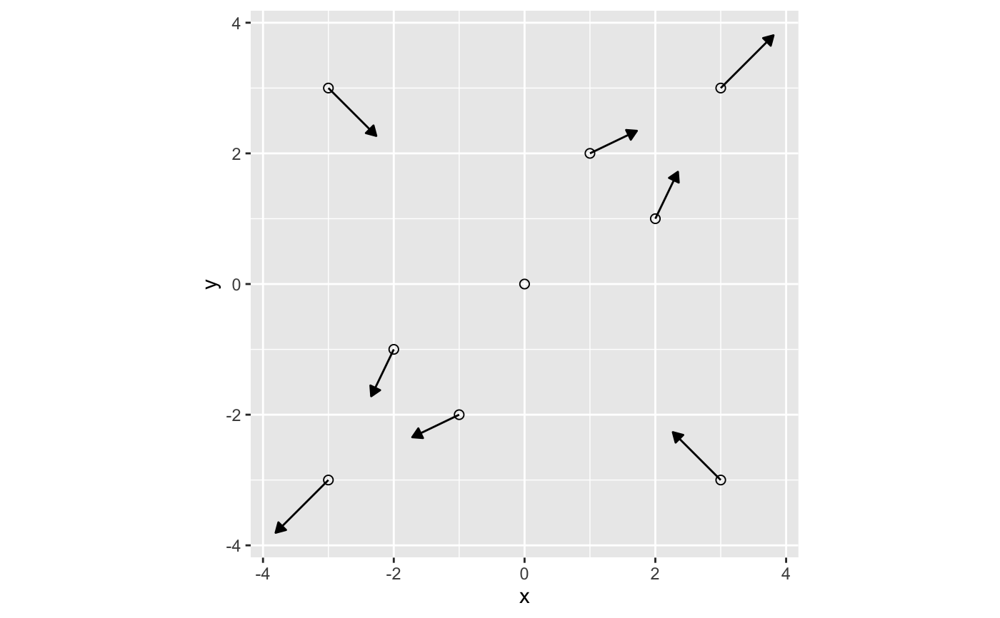

get_flow_direction.RdCalculates the derivative of hydraulic head in x and y directions, returning \(-dh/dx\) and \(-dh/dy\). For confined aquifers, the result is calculated using the sum of the effect of each analytical element, whereas for unconfined aquifers the result can be calculated analytically or numerically from hydraulic head.
get_flow_direction(loc, wells, aquifer, show_progress = FALSE, eps = 1e-06, numderiv = FALSE)
| loc | coordinates vector as c(x,y), with units of [m] or as data.frame with columns $x and $y |
|---|---|
| wells | wells object with each row containing rate Q [m^3/s], diam [m], radius of influence R [m], & coordinates x [m], y [m] |
| aquifer | Afuifer object containing aquifer_type, h0, Ksat, bounds, z0 (for confined case only) |
| show_progress | Boolean input parameter. If true and there are >20 combinations of wells and locations, then a progress bar will be printed. |
| eps | Threshold satisfying numeric derivative |
| numderiv | Boolean that determines whether unconfined aquifers are calculated analytically or numerically |
Outputs the flow direction in the x and y directions. If the input loc is
a numeric c(x,y), then the output is in the same format. If the input is a data.frame,
then the output is also a data.frame with columns dx and dy. The two values
indicate the flow direction, and are equivalent to \(-dh/dx\)
and \(-dh/dy\).
wells <- define_wells(x=c(0,0.5),y=c(0,0.25),Q=c(1e-3,-2e-3),diam=c(0.75,0.8),R=c(300,300)) aquifer <- define_aquifer(h0=0,Ksat=0.00001,z0=30,aquifer_type="confined") get_flow_direction(loc=c(5,5),wells,aquifer)#> [1] -0.05847298 -0.06466880grid_pts <- expand.grid(x=seq(0,10,by=5),y=seq(0,10,by=5)) get_flow_direction(loc=grid_pts,wells,aquifer)#> dx dy #> 1 1.697652726 0.848826363 #> 2 -0.128956313 0.013058867 #> 3 -0.058558739 0.002937115 #> 4 0.023255517 -0.114824114 #> 5 -0.058472984 -0.064668797 #> 6 -0.046908825 -0.023454413 #> 7 0.005566075 -0.055486805 #> 8 -0.020185505 -0.047272037 #> 9 -0.027867771 -0.029299181# Injection and pumping well along diagonal line wells2 <- data.frame(x=c(-10,10),y=c(-10,10),Q=c(1e-3,-1e-3),diam=c(0.1,0.1),R=c(300,300)) grid_pts2 <- data.frame(x=c(-11,0,11),y=c(-11,0,11)) aquifer_unconfined <- define_aquifer(aquifer_type="unconfined",Ksat=0.00001,h0=20) fd2_a <- get_flow_direction(loc=grid_pts2,wells2,aquifer_unconfined) fd2_b <- get_flow_direction(loc=grid_pts2,wells2,aquifer_unconfined,numderiv=TRUE) fd2_a - fd2_b#> dx dy #> 1 -3.736863e-09 -3.736863e-09 #> 2 -1.773212e-10 -1.773212e-10 #> 3 -4.489571e-09 -4.489571e-09# Two pumping wells along diagonal line wells3 <- data.frame(x=c(-10,10),y=c(-10,10),Q=c(-1e-3,-1e-3),diam=c(0.1,0.1),R=c(300,300)) grid_pts3 <- data.frame(x=c(-3,-3,0,3,3,-2,2,-1,1),y=c(-3,3,0,-3,3,-1,1,-2,2)) fd3 <- get_flow_direction(wells3,loc=grid_pts3,aquifer_unconfined) ## plot the flow directions # scale dx and dy for visualization library(dplyr) library(ggplot2) library(magrittr) fd3_grid <- grid_pts3 %>% cbind(fd3) %>% mutate(dx_norm=dx*50,dy_norm=dy*50,x2=x+dx_norm,y2=y+dy_norm) # normaliz # alternatively, apply nonlinear scaling to dx and dy for visualization fd3_grid <- grid_pts3 %>% cbind(fd3) %>% mutate(angle=atan(dy/dx),mag=sqrt(dx^2+dy^2),mag_norm=mag^(1/2)*5, dx_norm=mag_norm*cos(angle)*sign(dx),dy_norm=mag_norm*sin(angle)*sign(dx), x2=x+dx_norm,y2=y+dy_norm) ggplot(fd3_grid,aes(x,y)) + geom_point(size=2,shape=1) + geom_segment(aes(xend=x2,yend=y2), arrow=arrow(type="closed",length=unit(2,"mm"))) + coord_equal()#> Warning: Removed 1 rows containing missing values (geom_segment).wells <- define_wells(Q=0.1,x=-2,y=-2,R=100,diam=0.5) recharge_params <- list(recharge_type="F",recharge_vector=c(0,0,-1,-1),flow=1e-3,x0=0,y0=0) aquifer <- define_aquifer("confined",1e-3,h0=0,z0=1,recharge=recharge_params) get_flow_direction(c(-1,-1),wells,aquifer)#> [1] 7.25064 7.25064#> [1] -0.7071068 -0.7071068recharge_params <- list(recharge_type="D",recharge_vector=c(0,0,-1,-1), flow_main=1,flow_opp=1,x0=0,y0=0) aquifer <- define_aquifer("confined",1,h0=0,z0=1,recharge=recharge_params) loc <- expand.grid(x=-1:1,y=-1:1) loc %>% bind_cols(get_flow_direction(loc,wells,aquifer))#> x y dx dy #> 1 -1 -1 -0.6991490 -0.6991490 #> 2 0 -1 -0.7007406 -0.7039237 #> 3 1 -1 -0.7023321 -0.7055152 #> 4 -1 0 -0.7039237 -0.7007406 #> 5 0 0 -0.7031279 -0.7031279 #> 6 1 0 0.7107796 0.7095553 #> 7 -1 1 -0.7055152 -0.7023321 #> 8 0 1 0.7095553 0.7107796 #> 9 1 1 0.7097594 0.7097594#> x y dx dy #> 1 -1 -1 -0.7071068 -0.7071068 #> 2 0 -1 -0.7071068 -0.7071068 #> 3 1 -1 -0.7071068 -0.7071068 #> 4 -1 0 -0.7071068 -0.7071068 #> 5 0 0 -0.7071068 -0.7071068 #> 6 1 0 0.7071068 0.7071068 #> 7 -1 1 -0.7071068 -0.7071068 #> 8 0 1 0.7071068 0.7071068 #> 9 1 1 0.7071068 0.7071068recharge_params <- list(recharge_type="D",recharge_vector=c(10,10,11,11), flow_main=sqrt(2),flow_opp=sqrt(2),x0=0,y0=0) aquifer <- define_aquifer("confined",1,h0=0,z0=1,recharge=recharge_params) loc <- expand.grid(x=9:11,y=9:11) get_flow_direction(loc,wells,aquifer)#> dx dy #> 1 -0.9992766 -0.9992766 #> 2 -0.9992793 -0.9993394 #> 3 1.0007135 1.0006037 #> 4 -0.9993394 -0.9992793 #> 5 1.0006631 1.0006631 #> 6 1.0006610 1.0006102 #> 7 1.0006037 1.0007135 #> 8 1.0006102 1.0006610 #> 9 1.0006121 1.0006121get_flow_direction(loc,wells,aquifer)#> dx dy #> 1 -0.9992766 -0.9992766 #> 2 -0.9992793 -0.9993394 #> 3 1.0007135 1.0006037 #> 4 -0.9993394 -0.9992793 #> 5 1.0006631 1.0006631 #> 6 1.0006610 1.0006102 #> 7 1.0006037 1.0007135 #> 8 1.0006102 1.0006610 #> 9 1.0006121 1.0006121